驻车辅助/监视系统 全景监视系统 概述 概述
概要
采用全景监视系统显示驻车和低速行驶期间的车辆全景以辅助驾驶员。全景图像通过完美组合来自安装在车辆前后左右侧的各电视摄像机总成的图像而形成。

所示插图仅为示例。插图可能与实际车辆画面有所不同。
全景监视系统配有各种图像显示模式，可根据行驶状况确认车辆周围的区域。这些显示模式包括全景视野和前视野或后视野同时显示，或车辆左侧和右侧同时显示。
- 小心：
-
不要完全依赖全景监视系统。对于未配备的车型，应在确认周围的安全性后再小心行驶。
| 名称 | 显示 | 换档杆位置 | 备注 |
|---|---|---|---|
|
所示插图仅为示例。插图可能与车辆屏幕实际显示的内容有所差别。 |
|||
| 全景视野和前宽视野 | 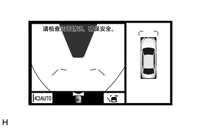 |
除 P 和 R 外 | 低速驾驶时，用于检查车辆周围和前方的情况。 |
| 侧视野和前宽视野 | 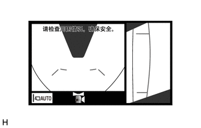 |
除 R 外 | 车门后视镜收缩时，用于检查车辆右侧周围和车辆前方的情况。 |
| 全景视野和后视野 | 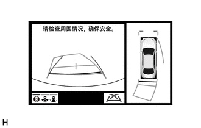 |
R | 倒车时，用于检查车辆周围和后方的情况。 |
| 侧视野和后视野 | 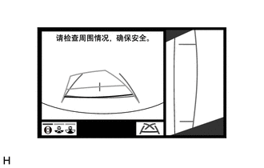 |
R | 车门后视镜收缩时，用于检查车辆右侧周围和车辆后方的情况。 |
| 后视图 | 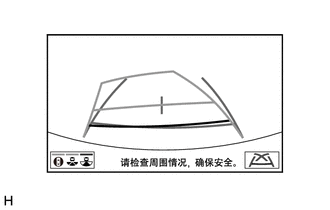 |
R | 倒车时，用于检查车辆后方的情况。 |
| 后宽视野 | 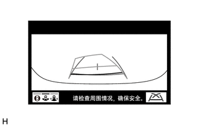 |
R | 倒车时，用于检查车辆后方的情况。 |
| 侧视野 | 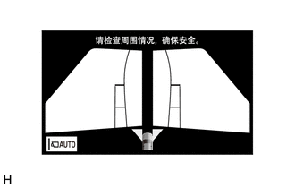 |
除 P 和 R 外 | 用于检查车辆前方两侧周围的情况（避开狭窄道路上或向道路侧方移动时的障碍物等） |
| 移动视野（至全景视野） | 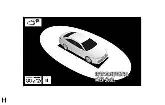 |
P | 驻车时，用于从第三人称视角检查车辆周围情况。 |
| 透视视野（至全景视野） | 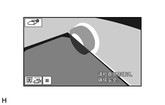 |
P | 驻车时，用于从第一人称视角检查车辆周围情况。 |
宽大的后视镜以宽阔视野显示车辆后方，可用于在倒车时确认车辆周围的安全性。
采用透视视野可使驾驶员在开始驾车前确认车辆周围环境的安全性。
为了产生开阔感并形成便利的可视区域，使用宽视野以优化前宽视野遮蔽的形状。
新采用了丰田驻车辅助传感器联动全景视野功能。以 10 km/h 或更低车速行驶时，丰田驻车辅助传感器系统检测到障碍物，监视画面自动从当前画面（导航画面，DVD 画面等）切换到带“全景视野和前宽视野”画面的间隙信息画面。
主要特征
全景监视系统完美组合了来自前、后、左、右侧电视摄像机总成的图像并将组合图像显示为全景视野图像。此外，该系统通过在收音机和显示屏接收器总成上同步显示全景视图和前侧（前宽视野）或后侧（后视野和后宽视野）图像或侧面图像（侧视野）等辅助驾驶员确认低速行驶时的行驶状况及驻车期间车辆周围区域的状况。
车辆的前侧图像（前宽视野）在可视性较差的位置（如十字路口和丁字路口）起步时辅助驾驶员确认车辆左右两侧区域及车辆前方区域的安全性。后侧图像（后视野和后宽视野）辅助倒车。最后，侧面图像（侧视野）辅助确认车辆侧面区域的安全性，从而避开障碍物并在狭窄道路上靠近路肩行驶。
透视视野将来自车辆前、后和两侧摄像机的图像组合成车辆周围区域的模拟视频显示。通过减少车内盲区的大小，辅助确认车辆周围区域的安全。
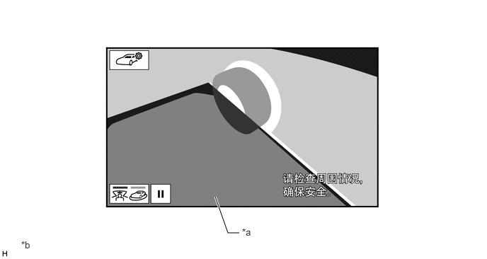
| *a | 本车 | *b | 所示插图仅为示例。插图可能与实际车辆画面有所不同。 |
注意事项
一般注意事项
不要完全依赖全景监视系统。对于未配备的车型，应在确认周围的安全性后再小心行驶。
行驶时，首先要确认周围的安全性。不要在仅观察监视画面的情况下行驶。
监视画面所显示的图像可能与实际情况不同。此外，由于各电视摄像机捕获的区域有限，不要在仅观察监视画面的情况下直行、左右转弯或倒车。否则会导致事故，如与其他车辆发生碰撞等。务必在通过车内后视镜总成、车外后视镜总成等确认周围的安全性后再小心驾驶。
根据乘客数量和负载能力，监视画面上显示的引导线位置可能不同。驾驶时务必检查车辆后方区域并直接确认周围的安全性。
在所有车门均关闭的状态下使用全景监视系统。
路面打滑（结冰或覆盖有积雪）时，不要在使用雪地防滑链和在斜坡上行驶时使用全景监视系统。否则会导致事故，如与其他车辆发生碰撞等。
不要仅依赖全景监视系统来判断距车辆周围物体的距离。在试图驻车前，务必确认有适当空间。
全景监视系统画面显示屏注意事项
全景视野为通过组合来自前、后、左、右侧电视摄像机总成的图像而形成的图像。由于可能的显示区域和显示内容有限，应在完全了解局限性的状态下使用全景监视系统。
由于显示在全景视野上的车辆图标通过电脑图像显示，因此车辆颜色、形状和尺寸可能与实际车辆不同。
4 个拐角处的图像清晰度可能会降低，但这不是故障。
根据各电视摄像机总成附近的照明强度，全景视野可能会较亮或较暗。
全景视野不显示各电视摄像机总成区域上方或以外的任何信息。
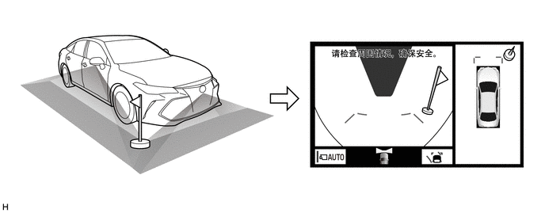
所示插图仅为示例。插图可能与实际车辆画面有所不同。
车辆存在无法显示在全景视野上的盲区。
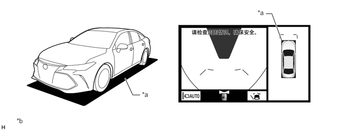
| *a | 未显示在画面上的盲区 | *b | 插图仅为示例。插图可能与实际车辆画面有所不同。 |
显示在前宽视野和后视野中的物体在全景中可能不显示。
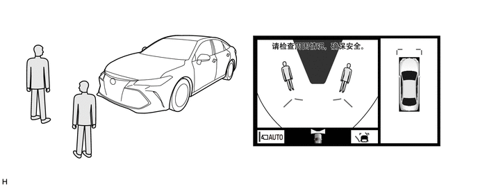
所示插图仅为示例。插图可能与实际车辆画面有所不同。
全景视野显示的物体，如行人和障碍物，可能与实际状况不同。
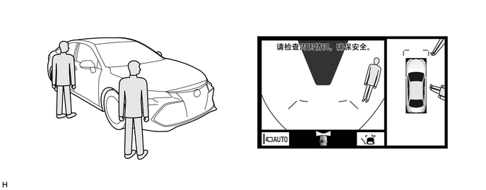
所示插图仅为示例。插图可能与实际车辆画面有所不同。
如果安装有后电视摄像机总成的行李箱门和安装有侧电视摄像机总成（内置于车外后视镜总成）的前门打开，则可能无法正确显示全景。
电视摄像机总成图像的注意事项
不要使电视摄像机总成受到碰撞。如果电视摄像机总成受到强烈撞击，则全景视野监视系统可能无法正常工作。
由于各电视摄像机总成配备特殊镜头，监视器上显示的距离可能与实际状况不同。
由于前电视摄像机总成的镜头由玻璃制成，飞起的石块和其他碎片会按照与挡风玻璃相同的方式损坏镜头。
前电视摄像机总成覆盖的区域有限。前电视摄像机总成无法显示接近保险杠任一角或位于保险杠下端的物体。
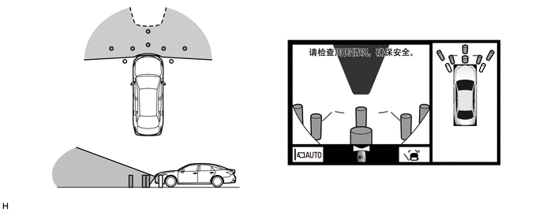
所示插图仅为示例。插图可能与实际车辆画面有所不同。
后电视摄像机总成覆盖的区域有限。后电视摄像机总成无法显示接近保险杠任一角或位于保险杠下端的物体。
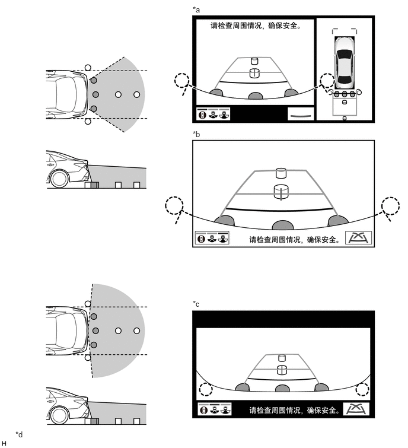
| *a | 全景视野和后视野 | *b | 后视图 |
| *c | 后宽视野 | *d | 所示插图仅为示例。插图可能与车辆屏幕实际显示的内容有所差别。 |
侧电视摄像机总成的拍摄区域有限。
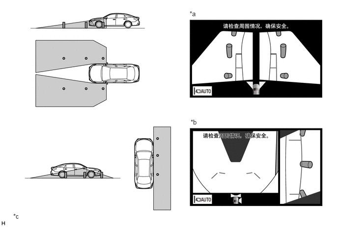
| *a | 侧视野 | *b | 侧视野和前宽视野 |
| *c | 所示插图仅为示例。插图可能与车辆屏幕实际显示的内容有所差别。 | - | - |
车外气温低时，画面可能会变暗或模糊。由于移动物体尤其可能会变形或消失，因此务必在确认周围的安全性后再小心驾驶。
太阳光或前照灯直接照射镜头、车辆位于黑暗位置（在夜间等）或镜头的温度过高或过低时，可能难以看清画面，但这不是故障。
清洗车辆时，不要将高压清洗器喷嘴直接对准电视摄像机总成或置于其周围。电视摄像机总成可能会因高水压而出现故障。
由于电视摄像机总成使用防水结构，不要拆解或改装电视摄像机总成。否则可能会漏水或总成可能无法正常工作。
如果电视摄像机总成遭受急剧的温度变化，则系统可能无法继续正常工作。
如果电视摄像机总成镜头上存在有机溶剂、蜡、油膜清洗剂、玻璃涂层等，则立即使用软布擦除并用水清洗。
如果镜头前的玻璃脏污，则摄像机无法拍摄清晰的图像。如果玻璃上有水滴、雪或脏污，则用大量的水将其冲洗干净并用柔软的湿布擦净。不要擦洗摄像机镜头，擦洗可能会划伤摄像机镜头，影响图像效果。
不要用力擦拭电视摄像机总成镜头。镜头可能会损坏且无法捕捉到清晰的图像。
在卤素灯、纳光灯和水银灯等下时，灯光本身及灯光照亮的区域可能会出现渐明和渐暗，从而产生“闪烁效果”。
路况注意事项
根据乘员人数、负载情况、道路坡度和道路颠簸程度，显示屏指示和距路面的实际距离之间可能会出现偏差。小心操作车辆。
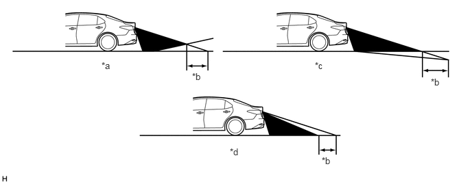
| *a | 车辆后方陡峭的上坡路 | *b | 偏差 |
| *c | 车辆后方陡峭的下坡路 | *d | 因乘客和负载而发生变化的车姿 |
如果车辆后方有陡峭的上坡路，则障碍物的位置比实际位置看起来要远，如下图所示：
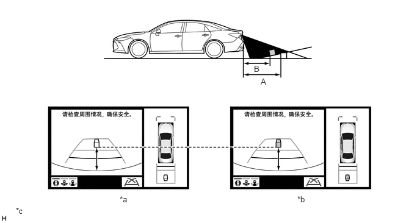
| *a | 情况 A 中的屏幕图像 | *b | 情况 B 中的屏幕图像 |
| *c | 所示插图仅为示例。插图可能与车辆屏幕实际显示的内容有所差别。 | - | - |
在打滑路面（如积雪道路）上，估算的车辆路径可能与实际车辆路径不同。
仅提供一条驻车线时，即使车辆实际上与屏幕上的线不平行，但是看起来仍是平行的。
三维障碍物注意事项
有任何物体，如墙壁或车辆位于车辆后部时，小心驾驶车辆，因为距离和估算引导线是根据路面情况提供的。
接近物体时，虽然从屏幕上看估算车辆路径上的车辆和物体看起来未接触，但实际上车辆可能与物体接触。
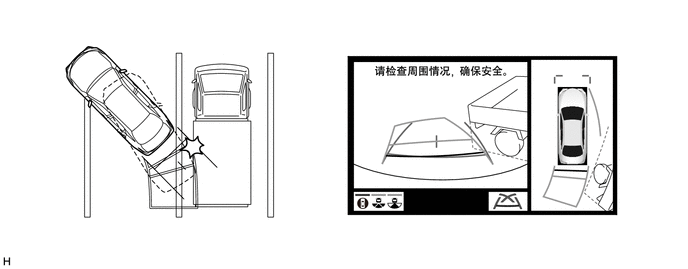
所示插图仅为示例。插图可能与实际车辆画面有所不同。
三维物体（如车辆）和平面物体（如路面）在屏幕上显示的距离指示不同。如下图所示，点 A 和点 B 在垂直方向实际为垂直排列，点 C 稍远。这些点是按照与车辆的距离排列的，即 B、C 和 A。因此，如果倒车至屏幕上的 B 点，则车辆将碰撞到该三维物体。
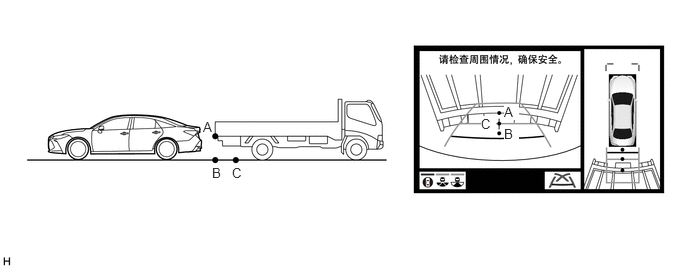
所示插图仅为示例。插图可能与实际车辆画面有所不同。